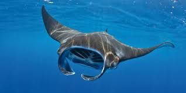

Mantovití (Myliobatidae; Bonaparte, 1838) je čeleď paryb z řádu pravých rejnoků, která je typická tvarem svého těla a pohybem, zdánlivě připomínajícím ptačí let. Čeleď zahrnuje 7 rodů.
| siba | Myliobatis |
|---|---|
| Rhinoptera | |
| Pteromylaeus | |
| Aetobatus | |
| manta | Manta |
| Mobula |